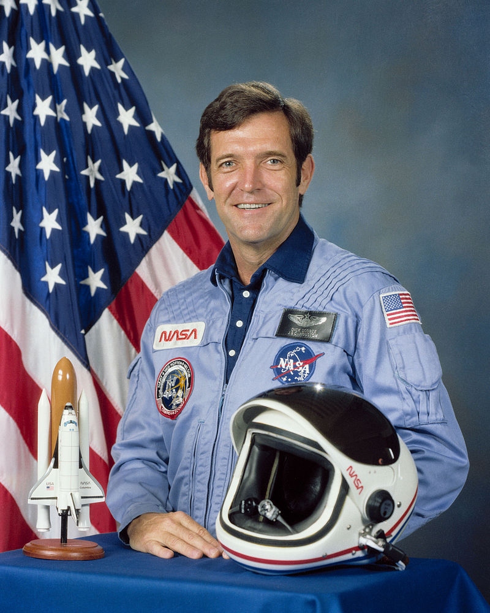

Space Shuttle Challenger
The Space Shuttle Challenger was destroyed 73 seconds after lift-off on STS-51-L at an altitude of 15 kilometers (49,000 ft). The investigation found that cold weather conditions caused an O-ring seal to fail, allowing hot gases from the shuttle solid rocket booster (SRB) to impinge on the external propellant tank and booster strut. The strut and aft end of the tank failed, allowing the top of the SRB to rotate into the top of the tank. Challenger was thrown sideways into the Mach 1.8 windstream and broke up with the loss of all seven crew members. NASA investigators determined they may have survived the spacecraft disintegration, possibly unconscious from hypoxia; some tried to activate their emergency oxygen. Any survivors of the breakup were killed, however, when the largely intact cockpit hit the water at 320 km/h (200 mph), about 32 km (20 miles) east of Cape Canaveral at 28.64 degrees north, 80.28 degrees west. About half of the vehicle's remains were never recovered, and fragments still washed ashore as long as a decade later, on the coast of Brevard County, Florida.
Fallen Astronauts
-
Gregory Jarvis Gregory Bruce Jarvis (August 24, 1944 – January 28, 1986) was an American engineer who died during the destruction of the Space Shuttle Challenger on mission STS-51-L, where he was serving as payload specialist for Hughes Aircraft.
-
Christa McAuliffe Sharon Christa McAuliffe (née Corrigan; September 2, 1948 – January 28, 1986) was an American teacher and astronaut from Concord, New Hampshire, and one of the seven crew members killed in the Space Shuttle Challenger disaster.
-
Ronald McNair Ronald Erwin McNair (October 21, 1950 – January 28, 1986) was an American NASA astronaut and physicist. He died during the launch of the Space Shuttle Challenger on mission STS-51-L, in which he was serving as one of three mission specialists in a crew of seven.
-
Ellison Onizuka .jpg)
Ellison Shoji Onizuka (Onizuka Shōji, June 24, 1946 – January 28, 1986) was an American astronaut and engineer from Kealakekua, Hawaii, who successfully flew into space with the Space Shuttle Discovery on STS-51-C. He died in the destruction of the Space Shuttle Challenger, on which he was serving as Mission Specialist for mission STS-51-L. He was the first Asian American and the first person of Japanese ancestry to reach space.
-
Judith Resnik Judith Arlene Resnik (April 5, 1949 – January 28, 1986) was an American electrical engineer, software engineer, biomedical engineer, pilot and NASA astronaut who died aboard the Space Shuttle Challenger when it was destroyed during the launch of mission STS-51-L. Resnik was the second American woman in space and the fourth woman in space worldwide, logging 145 hours in orbit. She was the first Jewish woman of any nationality in space. The IEEE Judith Resnik Award for space engineering is named in her honor.
-
Michael J. Smith Michael John Smith (April 30, 1945 – January 28, 1986), (Capt, USN), was an American engineer and astronaut. He served as the pilot of the Space Shuttle Challenger when it was destroyed during the STS-51-L mission, when it broke up 73 seconds into the flight, and at an altitude of 48,000 feet (14.6 km), killing all 7 crew members. Smith's voice was the last one heard on the Challenger voice recorder. He was a Master of Science who held a degree in Aeronautical Engineering.
-
Dick Scobee  Francis Richard Scobee (May 19, 1939 – January 28, 1986) was an American pilot, engineer and astronaut. He was killed while he was commanding the Space Shuttle Challenger in 1986, which suffered catastrophic booster failure during launch of the STS-51-L mission.